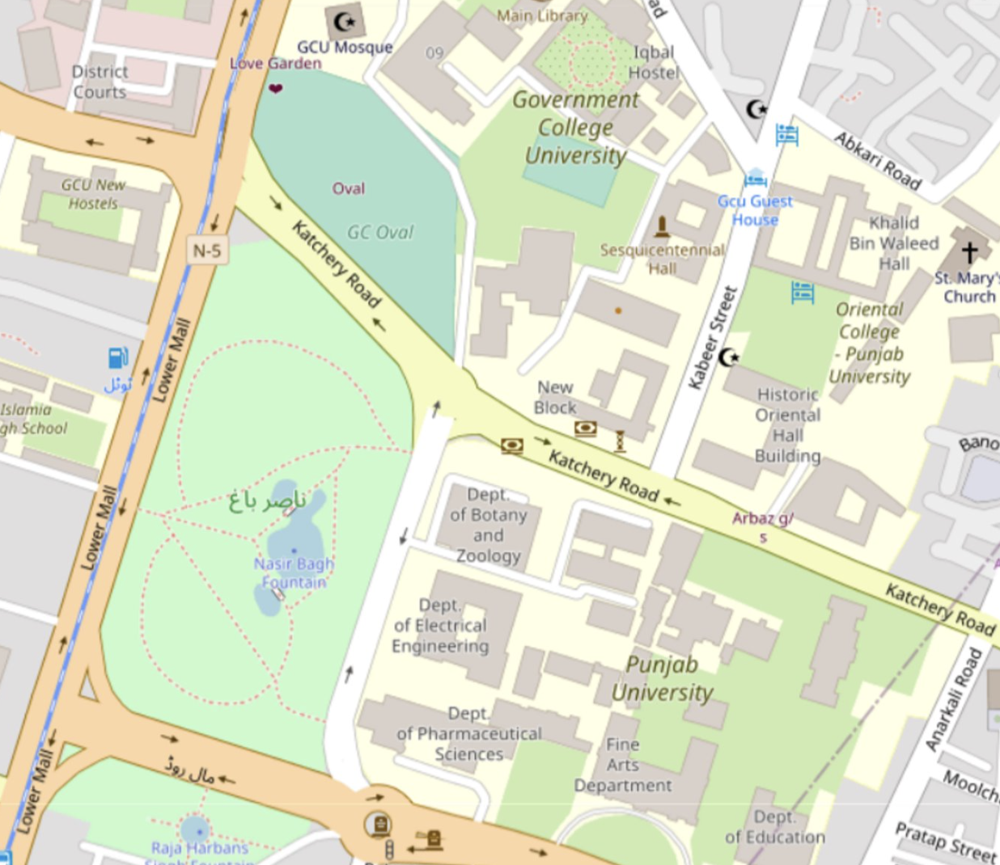

Geospatial Dataset for Lahore’s Urban Green Space
Constructed a labelled geospatial dataset for Lahore’s green spaces by fusing Google Maps vegetation masks, OpenStreetMap land-use polygons, and ESA WorldCover layers into a reproducible mapping workflow.
Remote Sensing
Open Street Maps
European Space Agency
Google Maps
QGIS & GEE